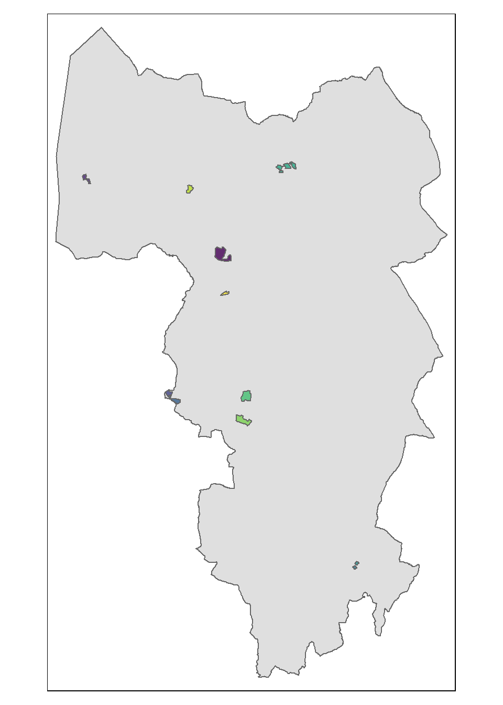
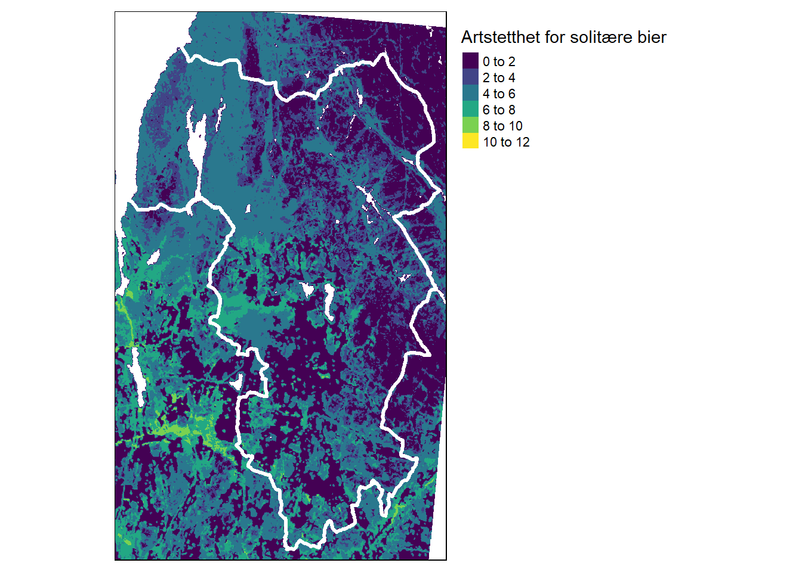

Kapittel 8 Eksempler
8.1 12 boligområder
Hvilken oppløsning kan vi forvente fra økologisk tilstand? Kan økologisk tilstand brukes som kunnskapsgrunnlag i arealbrukssaker? Her ser vi på ett konkret eksempel med 12 aktueller prosjektområder/boligområder i Nordre Follo kommune.

Områdene er spredt rundt i hele kommunen.
Arealet til prosjektområdene er fra 0.01 til 0.2 km2.
8.2 Indikatorer og variabler
Her følger noen eksempler på ulike variabler og indikatorer og hvordan de kan inngå i arbeidsflyten.
Pollinatorrikhet
Dette datasettet tetthet av solitaerebier representerer en arealdekkende modellering av artstetthet av solitære bier på en 20 x 20 meters oppløsning (Markus A. K. Sydenham et al. 2022; M. A. K. Sydenham et al. 2022).

Solitære bier er viktige pollinatorer. Slik sett kan dette være en fin tilstandsvariabel siden det er såpass relevant for pollinering, en sentral naturgode. Det er ikke ennå klart hvordan denne variabelen kan skalleres til å bli en indikator (jf. Figur 2.1), men det er heller ikke umulig at dette kan utvikles. Kartet er heldekkende, men denne variabelen er trolig mest relevant for åpent lavland, spesielt semi-naturlig mark, siden det er her man kan forvente å finne solitære bier.